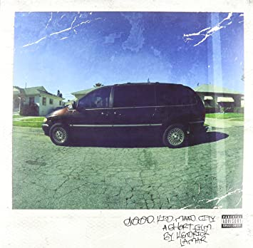

Hailing from the dangerous streets of Compton, California, Kendrick was surrounded by a myriad of influences: gang culture, crime, violence, and more. Yet, Kendrick persisted in his passion for writing and poetry. Kendrick’s experience being young is
summarized in the title of his second studio album, “good kid, m.A.A.d city.” Through the success of his music, Kendrick was able to make it out of that environment and tell the stories of his life in his music. Each one of his studio albums are
inspiring and thoughtful, and I have learned a lot from them.
Section.80
Section.80 is a social commentary on Kendrick’s generation. In it he covers themes such as racism, drug use, and the consequences of the Reagan era. This album made me a more socially aware person, as I now recognize the problems that plague the youth
and young adults. It made me want to be cautious about social pressures and be more self-aware of my influences as well.
good kid, m.A.A.d city
This album tells the story of Kendrick’s youth and how he tried to stay true to himself while being surrounded by many negative influences. In it are vivid images of life in Compton as a teenager and the struggles Kendrick faced, such as violence, alcoholism,
peer pressure, and drug use. Kendrick’s tale is very inspiring as it demonstrates how someone can beat insurmountable odds; Kendrick refused to succumb to the pressures of Compton and instead realized he could be something bigger. It told
me how I should live my life as well: staying true to myself no matter what surrounds me. It also reminded me that I should chase my dreams and passion, and I don’t have to do what everyone else says I should.

To Pimp A Butterfly
Often regarded as Kendrick’s magnum opus, TPAB is a generational work of art, covering various social and political themes, such as racism, corruption, greed, the allure of capitalism, and more. But ultimately, at its core, TPAB is a story of self-realization
and finding your purpose in life. TPAB educated me tremendously on various issues in the United States and inspired me to find my purpose in life. Furthermore, as a musical accomplishment, how Kendrick infused hip-hop with jazz and funk
is a great inspiration to my own interest in music production.
DAMN.
DAMN. takes Kendrick down a much different musical path: instead of a grand statement, DAMN. is a more scattered, introspective album. In it Kendrick details various parts of his psyche being one of the most critically acclaimed artists ever, along with
strong personal religious themes. DAMN. reminded me about the human condition that we all share, no matter how famous and rich you are. We all carry weight with us, whether that be our emotions, inner thoughts, or past experiences.
Overall, Kendrick’s life is a story of overcoming adversity, championing your beliefs, and chasing your dreams. Kendrick Lamar will continue to be one of my biggest inspirations for the rest of my life.